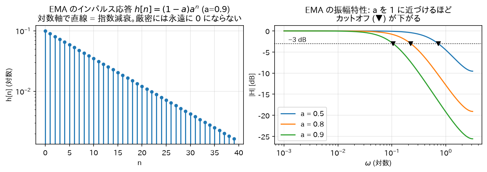
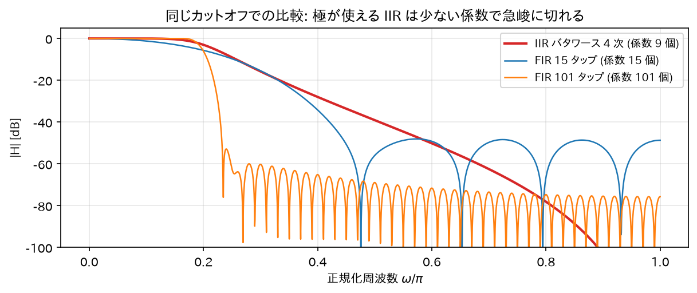
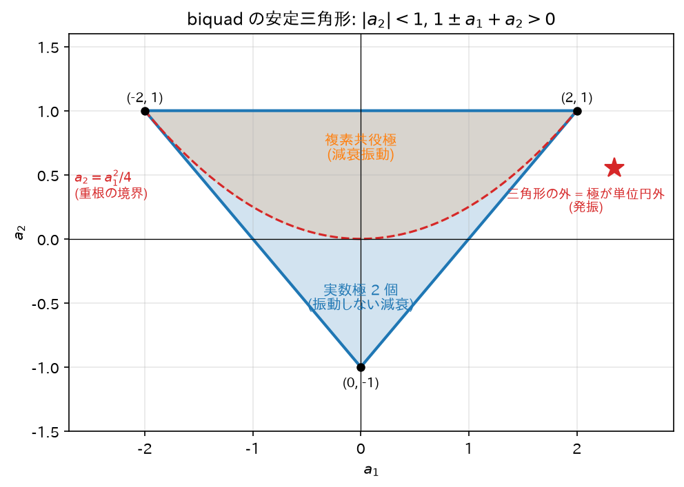

Chapter 07
IIR フィルタの基礎【本丸】
これまでの道具（畳み込み、Z 変換、伝達関数、極零点、安定性）を使って IIR フィルタそのものを理解する。
IIR とは、ひとことで言うと「自分の出力を材料に再利用するフィルタ」.
料理に例えると分かりやすい。
- FIR（もう一方の方式）は、毎回まっさらな材料だけで作る。 「直近の入力を何個か混ぜる」だけなので、作った料理そのものは次に持ち越さない。
- IIR は、昨日作ったスープを少し残して今日の鍋に足すタイプ（いわゆる「秘伝のタレ」方式）。 一度入れた材料の風味が、薄まりながらも永遠に残り続ける。
この「継ぎ足し」があるおかげで、ごく少ない材料で深いコクが出せる—— つまり少ない計算量で急峻なフィルタが作れる。これが IIR の最大の利点である。 代わりに、配合を間違えると味が際限なく濃くなって手に負えなくなる危険がある——出力が入力と無関係に成長し続けたり、減衰せずに振動し続けたりする発振（03 章 §6の「不安定」）である。 本章はこの「うまみ」と「危うさ」の両方を、数式で正確に押さえる。
この章で使う既出の用語（定義は各リンク先）. \(\delta[n]\)・\(u[n]\)・過渡応答（01 章 §1）、複素数・共役・偏角（02 章 §0）、インパルス応答（03 章 §3）、畳み込み（03 章）、因果的（03 章 §5）、線形位相（04 章 §5(b)）、Z 変換・ROC・時間シフト（05 章 §1–3）、差分方程式・フィードバック（06 章 §1）、伝達関数（06 章 §2）、極・零点（06 章 §3）、周波数特性の図形的解釈（06 章 §4）、安定性の定理（06 章 §5）
1. FIR と IIR — 定義
デジタルフィルタはインパルス応答\(h[n]\)の長さで 2 種類に分類される:
| FIR (Finite Impulse Response) | IIR (Infinite Impulse Response) | |
|---|---|---|
| インパルス応答 | 有限長（いつか完全に 0 になる） | 無限長（無限に続く） |
| 差分方程式 | \(y[n] = \sum_{k=0}^{M} b_k x[n-k]\) | \(y[n] = \sum_{k=0}^{M} b_k x[n-k] - \sum_{k=1}^{N} a_k y[n-k]\) |
| フィードバック | なし | あり（過去の出力を再利用） |
| 伝達関数 | 多項式（極（06 章 §3）は原点のみ） | 有理関数（原点以外に極を持つ） |
| 安定性 | 常に安定 | 極が単位円内のときのみ安定 |
| 位相 | 線形位相（位相特性が周波数に比例する直線＝全周波数が同じ遅れ）にできる | 厳密な線形位相は不可能 |
| 必要な次数 | 多い | 少ない（同じ仕様なら 1 桁少ないことも） |
直感
- FIR: 「直近\(M+1\)個の入力を混ぜるだけ」。記憶は窓の長さぶんしかない。バケツリレー。
- IIR: 「自分の過去の出力を材料に再利用する」。一度入った信号の影響がフィードバックループを 回り続けるので、たった 1 発のインパルスの余韻が（減衰しながら）永遠に残る。 お風呂にコップ 1 杯の熱湯を入れたときの温度変化のように、影響は指数的に薄まるが厳密には消えない。
2. 最小の IIR: 1 次フィルタの完全解析
（06 章の一般形 \(y[n] = b_0 x[n] - a_1 y[n-1]\) で書けば \(b_0 = 1-a\)、\(a_1 = -a\)。一般形はフィードバック項をマイナスで書く約束なので、この章の \(a\) は \(a_1\) の符号を反転したものに当たる。）
これは実務で最も使われる指数移動平均 (EMA: Exponential Moving Average)。 「新しい入力を\((1-a)\)だけ取り入れ、これまでの状態を\(a\)だけ保つ」平滑化フィルタである。
この 1 行の式が何をしているか. \(a = 0.9\)の場合で読んでみる:
$$y[n] = 0.9 \times (\text{前回の出力}) + 0.1 \times (\text{今回の入力})$$
つまり「今までの流れを 9 割信じて、新しい情報を 1 割だけ取り入れる」という頑固者。 入力が急に跳ねても、出力は 1 割ぶんしか動かないので、ノイズでガタガタした信号がなめらかになる。
\(a\)を 1 に近づけるほど頑固（＝より強く平滑化されるが、反応が鈍い）。 \(a\)を 0 に近づけるほど素直（＝入力にすぐ追従するが、ノイズも通す）。 体重計の「表示が落ち着くまで待つ」あの動きや、株価の移動平均線も、中身はこれと同じである。
2.1 インパルス応答の導出（方法 1: 逐次代入）
\(x[n] = \delta[n]\)（単位インパルス）を入れ、初期条件\(y[-1] = 0\)（入力が来る前は出力も 0、という初期静止の条件。因果的なシステムの自然な仮定）で 1 ステップずつ計算する:
パターンより（帰納法:\(y[n] = (1-a)a^n\)を仮定すると\(y[n+1] = a \cdot (1-a)a^n = (1-a)a^{n+1}\)✓）:
\(n\)がいくら大きくても\(h[n] = (1-a)a^n \neq 0\)。インパルス応答が無限に続く = IIR の名の由来を、 最小の例で確認できた。
2.2 インパルス応答の導出（方法 2: Z 変換）
差分方程式の両辺を Z 変換する（05 章 §3(b)の時間シフト性質\(y[n-1] \leftrightarrow z^{-1}Y(z)\)。\(X(z), Y(z)\) は入力・出力の Z 変換）:
05 章 §2 例 1の対\(a^n u[n] \leftrightarrow \frac{1}{1-az^{-1}}\)（ROC（収束領域）:\(|z|>|a|\)、因果的な右側信号として読む）より:
方法 1 と一致。∎ 極は\(z = a\)の 1 個。\(0 < a < 1\)なら単位円内 → 安定（06 章の定理どおり）。
2.3 周波数特性の導出
\(z = e^{j\omega}\)を代入:
振幅の 2 乗を計算する。複素数は \(|z|^2 = z z^*\)（共役との積）なので、分母の絶対値の 2 乗は:
よって:
端点の値:
- \(\omega = 0\):\(|H|^2 = \dfrac{(1-a)^2}{1 - 2a + a^2} = \dfrac{(1-a)^2}{(1-a)^2} = 1\)→ 直流はそのまま通す（ゲイン 1）
- \(\omega = \pi\):\(|H|^2 = \dfrac{(1-a)^2}{1 + 2a + a^2} = \dfrac{(1-a)^2}{(1+a)^2}\)→ 高域は\(\left(\dfrac{1-a}{1+a}\right)^2\)倍に減衰
\(\cos\omega\)は\(\omega: 0 \to \pi\)で単調減少なので分母は単調増加、つまり\(|H|\)は単調減少 = ローパスフィルタ。
カットオフ周波数（−3 dB 点）の導出: dB（デシベル）は電力比を \(10\log_{10}\) で表した単位で、電力 \(|H|^2\) が \(\tfrac{1}{2}\) になる点が \(10\log_{10}\tfrac{1}{2} = -3\) dB。\(|H|^2 = \tfrac{1}{2}\)となる\(\omega_c\)を求める:
例:\(a = 0.9\)→\(\cos\omega_c = \frac{3.6 - 0.81 - 1}{1.8} = \frac{1.79}{1.8} \approx 0.9944\)→\(\omega_c \approx 0.105\)rad/sample。 \(f_s = 48\)kHz なら\(f_c = \omega_c f_s / 2\pi \approx 805\)Hz。 \(a\)を 1 に近づけるほど極\(z=a\)が単位円に近づき、カットオフが下がって平滑化が強くなる。

2.4 位相特性と群遅延
（\(1 - ae^{-j\omega} = (1 - a\cos\omega) + ja\sin\omega\)の偏角（02 章 §0。実部と虚部から \(\arctan\) で求める角度）。分子は正の実数なので偏角 0。）
群遅延の定義は\(\tau_g(\omega) = -\dfrac{d\angle H}{d\omega}\)。「その周波数付近の波の包絡線（振動の山をなぞった外形の線。波の『かたまり』の形）が何サンプル遅れて出てくるか」を表す。
これが\(\omega\)に依存して変わる（= 非線形位相）のが IIR の宿命で、 周波数によって遅延量が異なるため波形が崩れる。音声・オーディオでは問題にならないことが多いが、 波形の形が意味を持つ用途（計測、データ伝送、心電図など）では FIR の線形位相が好まれる。
3. なぜ IIR は低次数で済むのか(直感 + 図形的説明)
同じ「鋭い」ローパス特性を作るのに、FIR は 100 次以上、IIR は 4〜8 次で済むことがよくある。理由:
- FIR の道具は零点だけ。零点は特定の周波数を「谷」にすることしかできない。 鋭い遮断を作るには大量の零点（= 高い次数 = 長い畳み込み）で通過域の外を敷き詰める必要がある。
- IIR は極が使える。極を単位円のすぐ内側、通過域の端に置くと、 その周波数のゲインが距離の逆数\(\frac{1}{|e^{j\omega}-p|}\)（06 章 §4の図形的解釈）で強烈に持ち上がる。 少数の極で通過域の平坦さと遮断の鋭さを同時に「てこの原理」的に稼げる。
たとえるなら、FIR は「彫刻刀で削って形を作る」、IIR は「共振（増幅）も使って形を作る」。 共振という強力な道具の代償が、安定性への注意と位相の非線形性である。

4. biquad(双 2 次)セクション — IIR の実用単位
実際の IIR フィルタは、次の 2 次セクション (biquad) を基本ブロックとして使う:
なぜ「biquad」という名前なのか. bi（2 つの）+ quadratic（2 次式）。 分子も分母も 2 次式でできているから。読み方は「バイクアッド」。 オーディオの世界では「フィルタ 1 個」といえばほぼこの biquad を指すほど標準的な単位である。
なぜ 2 次を単位にするのか
実係数フィルタの極・零点は「実数」か「複素共役対」（06 章）。 複素共役対\(p, p^*\)をひとまとめにすると係数が実数の 2 次式になる:
（\(p + p^* = 2\mathrm{Re}(p)\)、\(p p^* = |p|^2\)はともに実数。） つまり 2 次が「実数係数のまま複素極を 1 対持てる最小単位」。 高次フィルタは biquad の縦続（カスケード）接続で作る（数値的理由は 09 章）。
biquad の安定条件の導出（安定三角形）
分母\(D(z) = 1 + a_1 z^{-1} + a_2 z^{-2}\)の根（極）が両方\(|z| < 1\)にある条件を係数で表す。 \(z^2\)を掛けた\(z^2 + a_1 z + a_2 = 0\)の根を\(p_1, p_2\)とすると、根と係数の関係より:
条件の導出: 多項式\(P(z) = z^2 + a_1 z + a_2\)について、両根が単位円内にあるための必要十分条件は 次の 3 つである（2 次に対するジュリー安定判定）:
- \(P(1) > 0\):\(1 + a_1 + a_2 > 0\)
- \(P(-1) > 0\):\(1 - a_1 + a_2 > 0\)
- \(|a_2| < 1\)
導出:
- (必要性) 両根が単位円内 (\(|p_1|, |p_2| < 1\)) なら:
- \(|a_2| = |p_1 p_2| = |p_1||p_2| < 1\)→ 条件 3。
- 実根の場合\(-1 < p_1, p_2 < 1\)なので\(z=1\)と\(z=-1\)は両根の外側にあり、 下に凸（最高次の係数が \(+1\)）の 2 次関数\(P\)は区間\((p_1, p_2)\)の外で正。よって\(P(1) > 0\)かつ\(P(-1) > 0\)→ 条件 1, 2。
- 複素根の場合\(P(z) = (z - p)(z - p^*)\)で、実数\(t\)に対して\(P(t) = |t - p|^2 > 0\)。よって条件 1, 2 は自動的に成立。
- (十分性) 逆に 3 条件が成り立つとする。
- 複素根なら\(|p_1|^2 = p_1 p_1^* = a_2 < 1\)（条件 3）より両根とも単位円内。
- 実根なら\(P(1) > 0, P(-1) > 0\)より、根は区間\((-1,1)\)の外に「またがって」いない （\(P\)は根の間でのみ負になるため、\(\pm 1\)がともに根の間に入らない）。 \(p_1 \leq p_2\) と並べると、\(+1\) も \(-1\) も区間 \([p_1, p_2]\) に入らない配置は次の 4 通りで尽くされる: (i) 両根とも\((-1,1)\)内、(ii) 両根とも\(1\)より大、(iii) 両根とも\(-1\)より小、 (iv) 片方が\(1\)より大かつ片方が\(-1\)より小（\([p_1, p_2]\) が \([-1, 1]\) を丸ごと含む場合は \(\pm1\) が根の間に入るので除外済み）。 (ii)(iii) は\(|p_1 p_2| = |a_2| > 1\)となり条件 3 に矛盾。(iv) も\(|p_1 p_2| > 1\)で矛盾。よって (i)。∎
\((a_1, a_2)\)平面でこの 3 条件が描く領域は三角形になるので安定三角形と呼ぶ:

実装でフィルタ係数を動的に変える（例: シンセのフィルタスイープ）ときは、 係数がこの三角形から出ないことを保証する必要がある。
5. IIR の長所・短所まとめ
長所
- 同じ振幅特性なら FIR より圧倒的に低次数 → 計算量・メモリ・遅延が小さい
- アナログフィルタの蓄積された設計理論（バタワース等）をそのまま流用できる（08 章）
- 鋭い共振・急峻な遮断が少ない係数で作れる
短所
- 安定性の管理が必要（係数誤差・量子化で極が単位円外に出ると発振）
- 位相が非線形（波形が歪む）
- フィードバックがあるため量子化誤差が循環する（リミットサイクル等、09 章）
- 内部状態を持つため、係数変更時の過渡応答（変更直後に出力が一時的に暴れてから落ち着くまでの変化）に注意が要る